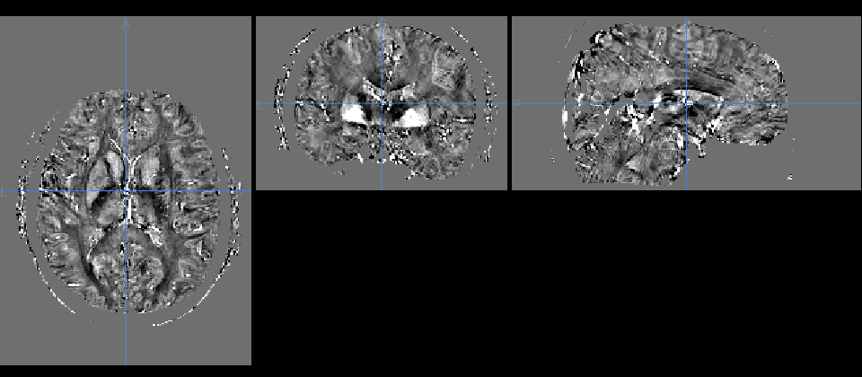

<!DOCTYPE html>
<html lang="en">
<head>
  <meta charset="UTF-8">
  <meta name="viewport" content="width=device-width, initial-scale=1.0">
  <title>QSMbly: inline settings mockup</title>
  <meta name="robots" content="noindex">
  <link rel="icon" href="favicon.ico" type="image/x-icon" sizes="16x16 32x32 48x48">
  <!--
    A static, clickable mockup of the new workspace with settings inline in the pipeline, for
    sign-off before next.html is rebuilt in this layout. It renders the engine's real settings
    schema (js/next/fixtures/schema.json) and browser profile (config-browser.json), with Preact
    and htm from vendor/. It runs nothing: which steps and settings show, the plan in the run bar
    and the "forced on" notes are stand-ins here, and come from the engine in the app.

    Query parameters, for screenshots: ?open=<step id>&advanced=1&help=<setting path>&theme=light|dark
  -->
  <script type="importmap">
    {
      "imports": {
        "preact": "./vendor/preact/preact.module.js",
        "preact/hooks": "./vendor/preact/hooks.module.js",
        "htm": "./vendor/htm/htm.module.js"
      }
    }
  </script>
  <style>
    :root {
      --bg: #f6f7f9;
      --panel: #ffffff;
      --panel-2: #f0f2f5;
      --hover: #eef1f5;
      --border: #e1e5eb;
      --divider: #edf0f3;
      --text: #1d2430;
      --text-2: #4b5565;
      --muted: #7b8595;
      --accent: #2563eb;
      --accent-soft: rgba(37, 99, 235, 0.10);
      --ok: #16a34a;
      --warn: #b45309;
      --error: #dc2626;
      --input-bg: #ffffff;
      --input-border: #cfd5de;
      --viewer-bg: #0b0d10;
      --mono: ui-monospace, 'SF Mono', Menlo, Consolas, monospace;
      --row: 28px;
      --r: 4px;
      color-scheme: light;
    }
    @media (prefers-color-scheme: dark) {
      :root:not([data-theme='light']) {
        --bg: #111418; --panel: #181c22; --panel-2: #1f242c; --hover: #232932;
        --border: #2a313b; --divider: #222830; --text: #e3e7ed; --text-2: #b4bcc8; --muted: #7d8796;
        --accent: #5b9bff; --accent-soft: rgba(91, 155, 255, 0.14); --ok: #34d399; --warn: #f5a524; --error: #f87171;
        --input-bg: #12161b; --input-border: #343c48; color-scheme: dark;
      }
    }
    :root[data-theme='dark'] {
      --bg: #111418; --panel: #181c22; --panel-2: #1f242c; --hover: #232932;
      --border: #2a313b; --divider: #222830; --text: #e3e7ed; --text-2: #b4bcc8; --muted: #7d8796;
      --accent: #5b9bff; --accent-soft: rgba(91, 155, 255, 0.14); --ok: #34d399; --warn: #f5a524; --error: #f87171;
      --input-bg: #12161b; --input-border: #343c48; color-scheme: dark;
    }

    * { box-sizing: border-box; }
    html, body { margin: 0; height: 100%; }
    body {
      background: var(--bg); color: var(--text);
      font: 13px/1.35 system-ui, -apple-system, 'Segoe UI', Roboto, sans-serif;
    }
    button, input, select { font: inherit; color: inherit; }
    a { color: var(--accent); text-decoration: none; }
    a:hover { text-decoration: underline; }
    :focus-visible { outline: 2px solid var(--accent); outline-offset: 1px; }
    .muted { color: var(--muted); }
    .vh { position: absolute; width: 1px; height: 1px; overflow: hidden; clip: rect(0 0 0 0); white-space: nowrap; }

    /* Layout: pipeline column | viewer, run bar below. */
    .app { display: grid; grid-template-rows: 40px minmax(0, 1fr) 40px; height: 100vh; }
    .main { display: grid; grid-template-columns: 400px minmax(0, 1fr); min-height: 0; }
    .top {
      display: flex; align-items: center; gap: 12px; padding: 0 12px;
      background: var(--panel); border-bottom: 1px solid var(--border);
    }
    .brand { font-weight: 650; font-size: 14px; }
    .scan { color: var(--muted); font-size: 12px; }
    .top .spacer { flex: 1; }
    .tbtn {
      height: 26px; padding: 0 10px; border-radius: var(--r); border: 1px solid var(--border);
      background: var(--panel); cursor: pointer;
    }
    .tbtn:hover { background: var(--hover); }
    .tbtn:disabled { opacity: 0.45; cursor: default; }

    /* Pipeline column */
    .pipeline { background: var(--panel); border-right: 1px solid var(--border); display: flex; flex-direction: column; min-height: 0; }
    .search { position: relative; padding: 8px; border-bottom: 1px solid var(--divider); }
    .search input {
      width: 100%; height: 28px; padding: 0 8px 0 26px; border-radius: var(--r);
      border: 1px solid var(--input-border); background: var(--input-bg);
    }
    .search svg { position: absolute; left: 16px; top: 15px; width: 14px; height: 14px; color: var(--muted); }
    .results {
      position: absolute; left: 8px; right: 8px; top: 38px; z-index: 5; margin: 0; padding: 4px 0; list-style: none;
      background: var(--panel); border: 1px solid var(--border); border-radius: 6px; box-shadow: 0 8px 24px rgba(0,0,0,.18);
    }
    .results button {
      display: flex; width: 100%; justify-content: space-between; gap: 8px; padding: 4px 10px;
      border: 0; background: none; text-align: left; cursor: pointer;
    }
    .results button:hover, .results button:focus-visible { background: var(--hover); }
    .steps { flex: 1; overflow-y: auto; margin: 0; padding: 0 0 16px; list-style: none; }
    .group { padding: 14px 12px 4px; font-size: 11px; font-weight: 600; letter-spacing: .04em; text-transform: uppercase; color: var(--muted); }

    .step { border-bottom: 1px solid var(--divider); }
    .step-head {
      display: grid; grid-template-columns: 14px minmax(0, 1fr) auto auto; align-items: center; gap: 6px;
      width: 100%; height: 34px; padding: 0 10px 0 8px; border: 0; background: none; cursor: pointer; text-align: left;
    }
    .step-head:hover { background: var(--hover); }
    .step[data-open='true'] > .step-head { background: var(--panel-2); }
    .chev { width: 14px; height: 14px; color: var(--muted); transition: transform .12s; }
    .step[data-open='true'] .chev { transform: rotate(90deg); }
    .step-title { font-weight: 600; white-space: nowrap; overflow: hidden; text-overflow: ellipsis; }
    .step-sum { color: var(--text-2); font-size: 12px; white-space: nowrap; overflow: hidden; text-overflow: ellipsis; max-width: 180px; }
    .step-off .step-title, .step-off .step-sum { color: var(--muted); font-weight: 500; }
    .state { width: 7px; height: 7px; border-radius: 50%; background: var(--ok); }
    .state.off { background: transparent; border: 1px solid var(--muted); }
    .state.changed { background: var(--accent); }

    .step-body { padding: 4px 10px 10px 28px; background: var(--panel-2); }
    .facts { display: grid; grid-template-columns: auto 1fr; gap: 2px 12px; margin: 4px 0; font-size: 12px; }
    .facts dt { color: var(--muted); }
    .facts dd { margin: 0; }

    /* Setting rows: label left, control right, one line. */
    .row {
      position: relative; display: grid; grid-template-columns: minmax(0, 1fr) auto; align-items: center; gap: 8px;
      min-height: var(--row); padding: 0 0 0 calc(var(--depth, 0) * 12px);
    }
    .row + .row, .row + .sub, .sub + .row { border-top: 1px solid var(--divider); }
    .lab { display: flex; align-items: center; gap: 4px; min-width: 0; color: var(--text-2); }
    .lab label { white-space: nowrap; overflow: hidden; text-overflow: ellipsis; }
    .dot { width: 6px; height: 6px; border-radius: 50%; flex: none; background: transparent; }
    .changed .dot { background: var(--accent); }
    .changed .lab { color: var(--text); }
    .info {
      flex: none; width: 15px; height: 15px; padding: 0; border-radius: 50%; border: 0; background: none;
      color: var(--muted); cursor: pointer; display: inline-grid; place-items: center; opacity: .7;
    }
    .info svg { width: 13px; height: 13px; }
    .row:hover .info, .info[aria-expanded='true'] { opacity: 1; }
    .info[aria-expanded='true'] { color: var(--accent); }
    .ctl { display: flex; align-items: center; gap: 4px; justify-content: flex-end; }
    .reset {
      border: 0; background: none; padding: 0 2px; color: var(--muted); cursor: pointer; visibility: hidden;
      width: 16px; height: 16px; display: grid; place-items: center;
    }
    .reset svg { width: 12px; height: 12px; }
    .changed:hover .reset, .reset:focus-visible { visibility: visible; }
    .reset:hover { color: var(--accent); }
    .sub { padding: 0 0 4px calc(var(--depth, 0) * 12px + 10px); font-size: 12px; color: var(--muted); line-height: 1.35; }
    .sub.help { color: var(--text-2); }
    .sub.err { color: var(--error); }
    .sub .opt-help { display: block; white-space: nowrap; overflow: hidden; text-overflow: ellipsis; }

    input.num, input.txt, select.sel {
      height: 22px; border: 1px solid var(--input-border); border-radius: var(--r); background: var(--input-bg); padding: 0 6px;
    }
    input.num { width: 68px; text-align: right; font-variant-numeric: tabular-nums; }
    input.num.v3 { width: 44px; }
    input.num::-webkit-inner-spin-button { display: none; }
    input.num[aria-invalid='true'] { border-color: var(--error); background: color-mix(in srgb, var(--error) 8%, var(--input-bg)); }
    input.txt { width: 128px; }
    select.sel { max-width: 190px; padding: 0 4px; }
    .unit { color: var(--muted); font-size: 12px; min-width: 22px; }
    .unit:empty { display: none; }
    input[type='checkbox'] { width: 14px; height: 14px; margin: 0; accent-color: var(--accent); }
    .switch { appearance: none; width: 26px !important; height: 15px !important; border-radius: 999px; background: var(--input-border); position: relative; cursor: pointer; transition: background .12s; }
    .switch::after { content: ''; position: absolute; top: 2px; left: 2px; width: 11px; height: 11px; border-radius: 50%; background: #fff; transition: transform .12s; }
    .switch:checked { background: var(--accent); }
    .switch:checked::after { transform: translateX(11px); }
    .switch:disabled { opacity: .55; cursor: default; }
    .note { font-size: 12px; color: var(--muted); font-style: italic; }
    .file { display: inline-flex; align-items: center; gap: 6px; }
    .file label.tbtn { height: 22px; display: inline-grid; place-items: center; font-size: 12px; padding: 0 8px; cursor: pointer; }
    .fname { max-width: 120px; overflow: hidden; text-overflow: ellipsis; white-space: nowrap; }
    .more {
      display: flex; align-items: center; gap: 4px; margin-top: 4px; padding: 0; border: 0; background: none;
      color: var(--accent); cursor: pointer; font-size: 12px; height: 22px;
    }
    .flash { animation: flash 1.2s ease-out; }
    @keyframes flash { from { background: var(--accent-soft); } to { background: transparent; } }

    /* Viewer */
    .viewer { display: grid; grid-template-rows: 34px minmax(0, 1fr) auto; min-width: 0; min-height: 0; }
    .vtool {
      display: flex; align-items: center; gap: 10px; padding: 0 12px; background: var(--panel);
      border-bottom: 1px solid var(--border); font-size: 12px;
    }
    .vtool .range { margin-left: auto; color: var(--muted); font-family: var(--mono); }
    .canvas { background: var(--viewer-bg); display: grid; place-items: center; min-height: 0; overflow: hidden; }
    .canvas img { max-width: 100%; max-height: 100%; object-fit: contain; }
    .outputs {
      display: flex; gap: 6px; align-items: center; padding: 6px 12px; overflow-x: auto;
      background: var(--panel); border-top: 1px solid var(--border);
    }
    .outputs .lbl { font-size: 11px; font-weight: 600; letter-spacing: .04em; text-transform: uppercase; color: var(--muted); margin-right: 4px; }
    .chip {
      flex: none; height: 24px; padding: 0 10px; border-radius: 999px; border: 1px solid var(--border);
      background: var(--panel); cursor: pointer; font-size: 12px;
    }
    .chip[aria-pressed='true'] { border-color: var(--accent); background: var(--accent-soft); }

    /* Run bar */
    .runbar {
      display: flex; align-items: center; gap: 18px; padding: 0 12px; background: var(--panel);
      border-top: 1px solid var(--border); font-size: 12px; white-space: nowrap; overflow-x: auto;
    }
    .run { height: 28px; padding: 0 18px; border: 0; border-radius: var(--r); background: var(--accent); color: #fff; font-weight: 600; cursor: pointer; }
    .meter { display: inline-flex; align-items: center; gap: 6px; }
    .bar { width: 100px; height: 6px; border-radius: 3px; background: var(--panel-2); overflow: hidden; border: 1px solid var(--border); }
    .bar > i { display: block; height: 100%; background: var(--ok); }
    .runbar .right { margin-left: auto; color: var(--muted); }

    /* Narrow: viewer on top, the pipeline under it. */
    @media (max-width: 899px) {
      .app { grid-template-rows: 40px minmax(0, 1fr) 40px; }
      .main { grid-template-columns: minmax(0, 1fr); grid-template-rows: 38vh minmax(0, 1fr); }
      .viewer { order: -1; grid-template-rows: 30px minmax(0, 1fr) auto; }
      .pipeline { border-right: 0; border-top: 1px solid var(--border); }
      .scan, .runbar .right, .vtool .range { display: none; }
      .step-sum { max-width: 46vw; }
    }
  </style>
</head>
<body>
  <div id="app"></div>
  <script type="module">
    import { h, render } from 'preact';
    import { useState, useEffect, useRef } from 'preact/hooks';
    import htm from 'htm';
    const html = htm.bind(h);

    const params = new URLSearchParams(location.search);
    if (params.get('theme')) document.documentElement.dataset.theme = params.get('theme');
    const [schema, browser] = await Promise.all(
      ['schema.json', 'config-browser.json'].map((f) => fetch(`js/next/fixtures/${f}`).then((r) => r.json())));
    const byPath = new Map(schema.settings.map((s) => [s.path, s]));

    // ---- Stand-ins (the engine provides these in the app) ----------------------------------
    // Steps in run order. In the app the rows are the plan's steps (engine labels, E1), and a
    // step not in the plan has no row; optional outputs are switch rows.
    const STEPS = [
      { id: 'data', label: 'Data', data: true },
      { id: 'geometry', label: 'Geometry', sections: ['geometry'], summary: 'pipeline.output_space' },
      { id: 'masking', label: 'Brain mask', sections: ['masking'] },
      { id: 'motion', label: 'Motion correction', sections: ['motion'], toggle: 'motion_correction.enabled' },
      { id: 'field-map', label: 'Field map', sections: ['field-map'], summary: 'field_mapping.unwrapping_algorithm' },
      { id: 'background', label: 'Background removal', sections: ['background'], summary: 'bg_removal.algorithm',
        // TGV, QSMART and the total-field methods remove the background themselves.
        inPlan: (c) => !['tgv', 'qsmart', 'tfi', 'iqsm', 'iqsm-plus', 'lpcnn'].includes(c.inversion.algorithm) },
      { id: 'inversion', label: 'Dipole inversion', sections: ['inversion'], summary: 'inversion.algorithm', hide: ['pipeline.do_qsm'] },
      { id: 'reference', label: 'Reference', sections: ['reference'], summary: 'qsm.reference' },
      { group: 'Optional outputs' },
      { id: 'separation', label: 'χ-separation', sections: ['separation'], toggle: 'pipeline.do_chi_separation', summary: 'separation.algorithm' },
      { id: 'swi', label: 'SWI / SMWI', sections: ['swi-smwi'], toggles: ['pipeline.do_swi', 'pipeline.do_smwi'] },
      { id: 'relaxometry', label: 'Relaxometry', sections: ['relaxometry'],
        toggles: ['pipeline.do_t2starmap', 'pipeline.do_r2starmap', 'pipeline.do_r2map', 'pipeline.do_r2primemap'] },
      { id: 'segmentation', label: 'Segmentation', sections: ['segmentation'], toggles: ['pipeline.do_segmentation', 'pipeline.do_analysis'] },
    ];
    // settings_view's forced_by, for the two cases this mockup shows.
    const FORCED = { 'pipeline.do_segmentation': 'pipeline.do_analysis', 'pipeline.do_qsm': 'pipeline.do_smwi' };

    const get = (o, p) => p.split('.').reduce((v, k) => (v == null ? undefined : v[k]), o);
    const set = (o, p, val) => {
      const [k, ...rest] = p.split('.');
      return { ...o, [k]: rest.length ? set(o?.[k] ?? {}, rest.join('.'), val) : val };
    };
    const same = (a, b) => JSON.stringify(a ?? null) === JSON.stringify(b ?? null);
    const value = (c, s) => get(c, s.path) ?? null;
    const forcedBy = (c, path) => (FORCED[path] && get(c, FORCED[path]) && !get(c, path) ? FORCED[path] : null);
    // Which settings apply: settings_view in the app. Here: a child applies when its parent is
    // on, or (for a method's parameters) when the method is chosen.
    function applies(c, s) {
      if (!s.parent) return true;
      const p = byPath.get(s.parent);
      if (!p || !applies(c, p)) return false;
      const pv = value(c, p);
      if (p.type === 'bool') return !!pv || !!forcedBy(c, p.path);
      if (p.type === 'enum') {
        const seg = s.path.split('.');
        const names = p.options.map((o) => String(o.value).replace(/-/g, '_'));
        const own = seg.find((x) => names.includes(x));
        return own ? own === String(pv).replace(/-/g, '_') : true;
      }
      return p.off === undefined ? true : !same(pv, p.off);
    }
    // A short name for an option: the schema gives the CLI value as its label and the readable
    // name at the start of its help (schema feedback 1).
    const optName = (o) => {
      const head = (o.help || '').split(/ — | \(|: |; /)[0].trim();
      // Only a method's name (it has capitals past the first letter: iLSQR, V-SHARP), not a sentence.
      return head && head.length <= 30 && /.[A-Z]/.test(head) ? head : o.label;
    };
    const fmt = (s, v) => {
      if (s.off !== undefined && same(v, s.off)) return 'off';
      if (v === null || v === undefined) return 'unset';
      if (s.type === 'bool') return v ? 'on' : 'off';
      if (s.options) { const o = s.options.find((x) => same(x.value, v)); if (o) return optName(o); }
      if (Array.isArray(v)) return v.join('×');
      return `${v}${s.units ? ` ${s.units}` : ''}`;
    };
    const check = (s, v) => {
      if (typeof v !== 'number' || !Number.isFinite(v)) return 'Enter a number.';
      if ((s.type === 'int' || s.type === 'int-vec3') && !Number.isInteger(v)) return 'Enter a whole number.';
      if (s.min !== undefined && (s.exclusive_min ? v <= s.min : v < s.min)) return `Must be ${s.exclusive_min ? 'greater than' : 'at least'} ${s.min}.`;
      if (s.max !== undefined && (s.exclusive_max ? v >= s.max : v > s.max)) return `Must be ${s.exclusive_max ? 'less than' : 'at most'} ${s.max}.`;
      return null;
    };
    const maskSummary = (c) => {
      if (c.masking.custom_mask_tool) return 'supplied file';
      const sec = c.masking.sections[0];
      return [sec.generator.method ?? sec.generator.op, ...sec.refinements.map((r) => r.op)].join(' · ');
    };

    // ---- Icons -----------------------------------------------------------------------------
    const ICON = {
      chev: html`<svg class="chev" viewBox="0 0 16 16" fill="none" stroke="currentColor" stroke-width="1.6"><path d="M6 4l4 4-4 4"/></svg>`,
      info: html`<svg viewBox="0 0 16 16" fill="none" stroke="currentColor" stroke-width="1.4"><circle cx="8" cy="8" r="6.3"/><path d="M8 7.2v4M8 4.9v.1"/></svg>`,
      reset: html`<svg viewBox="0 0 16 16" fill="none" stroke="currentColor" stroke-width="1.6"><path d="M3.5 8a4.5 4.5 0 1 0 1.4-3.3M3.5 2.8v2.6h2.6"/></svg>`,
      search: html`<svg viewBox="0 0 16 16" fill="none" stroke="currentColor" stroke-width="1.6"><circle cx="7" cy="7" r="4.5"/><path d="M10.5 10.5L14 14"/></svg>`,
    };

    // ---- App -------------------------------------------------------------------------------
    function App() {
      const [config, setConfig] = useState(browser);
      const [past, setPast] = useState([]);
      const [future, setFuture] = useState([]);
      const [open, setOpen] = useState(params.get('open') ?? 'inversion');
      const [advanced, setAdvanced] = useState(params.get('advanced') ? { [params.get('open') ?? 'inversion']: true } : {});
      const [files, setFiles] = useState({});
      const [focus, setFocus] = useState(null);
      const [theme, setTheme] = useState(document.documentElement.dataset.theme ?? '');

      const edit = (path, v) => {
        setPast([...past, config]); setFuture([]);
        setConfig(set(config, path, v));
      };
      const undo = () => { if (!past.length) return; setFuture([config, ...future]); setConfig(past[past.length - 1]); setPast(past.slice(0, -1)); };
      const redo = () => { if (!future.length) return; setPast([...past, config]); setConfig(future[0]); setFuture(future.slice(1)); };
      useEffect(() => {
        const key = (e) => {
          if (!(e.ctrlKey || e.metaKey) || e.key.toLowerCase() !== 'z') return;
          const t = e.target;
          if (t instanceof HTMLInputElement && t.type === 'text' && t.value !== t.defaultValue) return; // the field's own undo
          e.preventDefault();
          if (e.shiftKey) redo(); else undo();
        };
        window.addEventListener('keydown', key);
        return () => window.removeEventListener('keydown', key);
      });
      const cycleTheme = () => {
        const next = theme === '' ? 'dark' : theme === 'dark' ? 'light' : '';
        if (next) document.documentElement.dataset.theme = next; else delete document.documentElement.dataset.theme;
        setTheme(next);
      };

      const steps = STEPS.filter((s) => s.group || !s.inPlan || s.inPlan(config));
      const goTo = (setting) => {
        const step = STEPS.find((s) => s.sections?.includes(setting.section));
        if (!step) return;
        setOpen(step.id);
        if (setting.level === 'advanced') setAdvanced({ ...advanced, [step.id]: true });
        setFocus(setting.path);
      };

      return html`
        <div class="app">
          <header class="top">
            <span class="brand">QSMbly</span>
            <span class="scan">sub-1 · 5 echoes · 2.89 T · 184×256×128 @ 1 mm</span>
            <span class="spacer"></span>
            <button class="tbtn" onClick=${undo} disabled=${!past.length} title="Undo (Ctrl+Z)">Undo</button>
            <button class="tbtn" onClick=${redo} disabled=${!future.length} title="Redo (Ctrl+Shift+Z)">Redo</button>
            <button class="tbtn" onClick=${cycleTheme} title="Theme">${theme === '' ? 'Auto' : theme === 'dark' ? 'Dark' : 'Light'}</button>
            <button class="tbtn">Export</button>
          </header>
          <div class="main">
            <aside class="pipeline" aria-label="Pipeline">
              <${Search} config=${config} onPick=${goTo} />
              <ol class="steps">
                ${steps.map((step) => step.group
                  ? html`<li class="group" aria-hidden="true">${step.group}</li>`
                  : html`<${Step} step=${step} config=${config} edit=${edit} open=${open === step.id}
                      onToggle=${() => setOpen(open === step.id ? null : step.id)}
                      advanced=${!!advanced[step.id]} setAdvanced=${(v) => setAdvanced({ ...advanced, [step.id]: v })}
                      files=${files} setFiles=${setFiles} focus=${focus} clearFocus=${() => setFocus(null)} />`)}
              </ol>
            </aside>
            <${Viewer} />
          </div>
          <${RunBar} config=${config} />
        </div>`;
    }

    function Search({ config, onPick }) {
      const [q, setQ] = useState('');
      const words = q.toLowerCase().split(/\s+/).filter(Boolean);
      const hits = words.length ? schema.settings.filter((s) => STEPS.some((st) => st.sections?.includes(s.section))
        && words.every((w) => [s.label, s.help, s.cli_flag, s.path, ...(s.options ?? []).map((o) => o.help)].join(' ').toLowerCase().includes(w))).slice(0, 8) : [];
      return html`
        <div class="search" role="search">
          ${ICON.search}
          <input type="search" placeholder="Search settings" aria-label="Search settings" value=${q} onInput=${(e) => setQ(e.currentTarget.value)} />
          ${words.length > 0 && html`
            <ul class="results">
              ${hits.map((s) => html`<li><button onClick=${() => { setQ(''); onPick(s); }}>
                <span>${s.label}</span><span class="muted">${STEPS.find((st) => st.sections?.includes(s.section))?.label}</span></button></li>`)}
              ${!hits.length && html`<li class="muted" style="padding:4px 10px">No setting matches.</li>`}
            </ul>`}
        </div>`;
    }

    function Step({ step, config, edit, open, onToggle, advanced, setAdvanced, files, setFiles, focus, clearFocus }) {
      if (step.data) {
        return html`
          <li class="step" data-open=${open}>
            <button class="step-head" aria-expanded=${open} onClick=${onToggle}>
              ${ICON.chev}<span class="step-title">${step.label}</span><span class="step-sum">5 echoes · 2.89 T</span><span class="state"></span>
            </button>
            ${open && html`<div class="step-body"><dl class="facts">
              <dt>Files</dt><dd>5 phase, 5 magnitude, 5 sidecars</dd>
              <dt>Echo times</dt><dd>5, 11, 17, 23, 29 ms</dd>
              <dt>Field</dt><dd>2.89 T, B0 axial</dd>
              <dt>Grid</dt><dd>184 × 256 × 128, 1 mm</dd></dl></div>`}
          </li>`;
      }
      const toggle = step.toggle ? byPath.get(step.toggle) : null;
      const on = toggle ? !!value(config, toggle) : step.toggles ? step.toggles.some((p) => get(config, p) || forcedBy(config, p)) : true;
      let summary = '';
      if (step.toggles) summary = step.toggles.filter((p) => get(config, p) || forcedBy(config, p)).map((p) => byPath.get(p).label.replace(/^Compute /, '').replace(/ Map$/, '')).join(', ') || 'off';
      else if (step.id === 'masking') summary = maskSummary(config);
      else if (!on) summary = 'off';
      else if (step.summary) summary = fmt(byPath.get(step.summary), get(config, step.summary));

      const rows = schema.settings
        .filter((s) => step.sections.includes(s.section) && s.path !== step.toggle && !(step.hide ?? []).includes(s.path) && applies(config, s))
        .sort((a, b) => a.order - b.order);
      const changed = (s) => !same(value(config, s), s.browser_default);
      const shown = advanced ? rows : rows.filter((s) => s.level === 'basic' || changed(s));
      const hidden = rows.length - shown.length;
      const depth = (s) => { let d = 0; let p = s.parent; while (p && rows.some((r) => r.path === p)) { d++; p = byPath.get(p).parent; } return d; };
      const anyChanged = rows.some(changed) || (toggle && changed(toggle));

      return html`
        <li class=${`step${on ? '' : ' step-off'}`} data-open=${open} data-step=${step.id}>
          <div style="position:relative">
            <button class="step-head" aria-expanded=${open} onClick=${onToggle} style=${toggle ? 'padding-right:44px' : ''}>
              ${ICON.chev}<span class="step-title">${step.label}</span>
              <span class="step-sum">${summary}</span>
              <span class=${`state${on ? (anyChanged ? ' changed' : '') : ' off'}`} title=${on ? (anyChanged ? 'Changed from default' : 'Will run') : 'Off'}></span>
            </button>
            ${toggle && html`<input type="checkbox" class="switch" aria-label=${toggle.label} checked=${on}
              style="position:absolute; right:10px; top:10px" onChange=${(e) => edit(toggle.path, e.currentTarget.checked)} />`}
          </div>
          ${open && html`
            <div class="step-body">
              ${toggle && !on && html`<div class="sub" style="padding:6px 0">${toggle.help}</div>`}
              ${(on || step.toggles) && shown.map((s) => html`<${Row} key=${s.path} s=${s} config=${config} edit=${edit} depth=${depth(s)}
                files=${files} setFiles=${setFiles} focus=${focus === s.path} clearFocus=${clearFocus} />`)}
              ${(on || step.toggles) && (hidden > 0 || advanced) && rows.some((s) => s.level === 'advanced') && html`
                <button class="more" onClick=${() => setAdvanced(!advanced)}>${advanced ? '− Fewer settings' : `+ ${hidden} advanced`}</button>`}
            </div>`}
        </li>`;
    }

    function Row({ s, config, edit, depth, files, setFiles, focus, clearFocus }) {
      const v = value(config, s);
      const [help, setHelp] = useState(params.get('help') === s.path);
      const [err, setErr] = useState(null);
      const ref = useRef(null);
      useEffect(() => {
        if (!focus || !ref.current) return;
        ref.current.scrollIntoView({ block: 'center' });
        ref.current.classList.add('flash');
        ref.current.querySelector('input, select')?.focus();
        clearFocus();
      }, [focus]);
      const id = `s-${s.path.replace(/\W+/g, '-')}`;
      const changed = !same(v, s.browser_default);
      const forced = forcedBy(config, s.path);
      const toggled = s.off !== undefined;
      const isOn = !toggled || !same(v, s.off);
      const helpText = [s.help, s.value_help].filter(Boolean).join(' ');
      const commitNum = (text, i) => {
        const n = Number(text);
        const next = i === undefined ? n : v.map((x, j) => (j === i ? n : x));
        const e = text.trim() === '' ? (s.optional ? null : 'A value is needed.') : check(s, n);
        setErr(e);
        if (!e) edit(s.path, text.trim() === '' ? null : next);
      };
      const browserNote = !same(s.default, s.browser_default)
        ? `QSMxT's default is ${fmt(s, s.default)}; the browser uses ${fmt(s, s.browser_default)} to fit in memory.` : null;

      let control;
      if (s.browser === 'unavailable') control = html`<span class="note">not in the browser yet</span>`;
      else if (s.browser === 'supplied-file') {
        control = html`<span class="file">
          <label class="tbtn" for=${id}>${files[s.path] ? 'Replace…' : 'Choose file…'}</label>
          <input type="file" id=${id} class="vh" accept=".nii,.nii.gz" onChange=${(e) => {
            const f = e.currentTarget.files?.[0]; if (!f) return;
            setFiles({ ...files, [s.path]: f.name }); edit(s.path, 'qsmbly');
          }} />
        </span>`;
      } else if (s.type === 'bool') {
        control = html`<input type="checkbox" class="switch" id=${id} checked=${!!v || !!forced} disabled=${!!forced} onChange=${(e) => edit(s.path, e.currentTarget.checked)} />`;
      } else if (s.type === 'enum' || s.type === 'echo-reference') {
        const opts = s.options;
        const i = opts.findIndex((o) => same(o.value, v));
        control = html`<select class="sel" id=${id} onChange=${(e) => { const k = Number(e.currentTarget.value); edit(s.path, k < 0 ? null : opts[k].value); }}>
          ${s.optional && html`<option value="-1" selected=${i < 0}>unset</option>`}
          ${opts.map((o, k) => html`<option value=${k} selected=${k === i}>${optName(o)}</option>`)}
        </select>`;
      } else if (s.type === 'int' || s.type === 'float') {
        control = html`
          ${toggled && html`<input type="checkbox" aria-label=${`${s.label} on`} checked=${isOn}
            onChange=${(e) => edit(s.path, e.currentTarget.checked ? (same(s.browser_default, s.off) ? (s.default ?? 1) : s.browser_default) : s.off)} />`}
          ${isOn && html`<input class="num" id=${id} inputmode="decimal" value=${v ?? ''} placeholder=${s.optional ? 'auto' : ''}
            aria-invalid=${err ? 'true' : undefined} onChange=${(e) => commitNum(e.currentTarget.value)} />`}
          ${isOn && html`<span class="unit">${s.units ?? ''}</span>`}`;
      } else if (s.type.endsWith('vec3')) {
        control = html`${[0, 1, 2].map((k) => html`<input class="num v3" id=${k === 0 ? id : undefined} aria-label=${`${s.label} ${'xyz'[k]}`}
          value=${v?.[k] ?? ''} aria-invalid=${err ? 'true' : undefined} onChange=${(e) => commitNum(e.currentTarget.value, k)} />`)}<span class="unit">${s.units ?? ''}</span>`;
      } else if (s.type === 'mask-sections' || s.type === 'mask-ops') {
        control = html`<span class="note">${s.type === 'mask-sections' ? maskSummary(config) : `${v?.length ?? 0} steps`}</span>`;
      } else {
        control = html`<input class="txt" id=${id} value=${v ?? ''} placeholder=${s.optional ? 'unset' : ''} onChange=${(e) => edit(s.path, e.currentTarget.value || (s.optional ? null : ''))} />`;
      }
      const chosen = s.options?.find((o) => same(o.value, v));

      return html`
        <div class=${`row${changed ? ' changed' : ''}`} style=${`--depth:${depth}`} ref=${ref} data-path=${s.path}>
          <div class="lab">
            <span class="dot" title=${changed ? 'Changed from default' : ''}></span>
            <label for=${id} title=${s.label}>${s.label}</label>
            ${helpText && html`<button class="info" aria-expanded=${help} aria-label=${`About ${s.label}`} onClick=${() => setHelp(!help)}>${ICON.info}</button>`}
          </div>
          <div class="ctl">
            ${control}
            <button class="reset" title=${`Reset to ${fmt(s, s.browser_default)}`} aria-label=${`Reset ${s.label}`}
              onClick=${() => { setErr(null); edit(s.path, s.browser_default); }}>${changed ? ICON.reset : ''}</button>
          </div>
        </div>
        ${chosen && chosen.help && html`<div class="sub" style=${`--depth:${depth}`}><span class="opt-help" title=${chosen.help}>
          ${chosen.help.replace(/^[^—]*— /, '')} ${chosen.url && html`<a href=${chosen.url} target="_blank" rel="noopener">ref ↗</a>`}</span></div>`}
        ${help && html`<div class="sub help" style=${`--depth:${depth}`}>${helpText}${browserNote ? ` ${browserNote}` : ''}</div>`}
        ${!help && browserNote && html`<div class="sub" style=${`--depth:${depth}`}>${browserNote}</div>`}
        ${files[s.path] && v === 'qsmbly' && html`<div class="sub" style=${`--depth:${depth}`}>${files[s.path]}
          <button class="more" style="display:inline; margin:0 0 0 6px" onClick=${() => { const { [s.path]: _, ...rest } = files; setFiles(rest); edit(s.path, null); }}>Remove</button></div>`}
        ${forced && html`<div class="sub note" style=${`--depth:${depth}`}>On: ${byPath.get(forced).label} needs it.</div>`}
        ${err && html`<div class="sub err" style=${`--depth:${depth}`} role="alert">${err}</div>`}`;
    }

    function Viewer() {
      const [chip, setChip] = useState('χ');
      return html`
        <main class="viewer" aria-label="Viewer">
          <div class="vtool">
            <select class="sel"><option>3-plane</option><option>Axial</option><option>Coronal</option><option>Sagittal</option></select>
            <strong>${chip}</strong><span class="muted">ppm</span>
            <span class="range">−0.06 … 0.07 ppm · gray</span>
          </div>
          <div class="canvas"></div>
          <div class="outputs">
            <span class="lbl">Outputs</span>
            ${['Magnitude', 'Brain mask', 'Total field', 'Local field', 'χ'].map((c) => html`
              <button class="chip" aria-pressed=${chip === c} onClick=${() => setChip(c)}>${c}</button>`)}
          </div>
        </main>`;
    }

    function RunBar({ config }) {
      const dl = config.inversion.algorithm.match(/^(xqsm|qsmnet|autoqsm|qsmgan|ir2qsm|lpcnn|modl|nextqsm|iqsm)/);
      return html`
        <footer class="runbar">
          <button class="run">${dl ? 'Download & run' : 'Run'}</button>
          <span>Plan: 9 steps</span>
          <span class="meter">Peak 1.8 / 4.0 GB <span class="bar"><i style="width:45%"></i></span></span>
          <span>Downloads: ${dl ? `${optName(byPath.get('inversion.algorithm').options.find((o) => o.value === config.inversion.algorithm))} weights` : 'none'}</span>
          <span>No problems</span>
          <span class="right">Mockup: nothing runs</span>
        </footer>`;
    }

    render(html`<${App} />`, document.getElementById('app'));
  </script>
</body>
</html>
